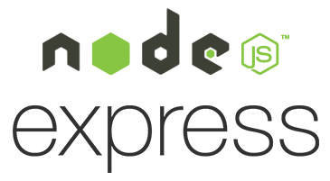
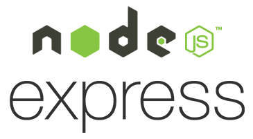
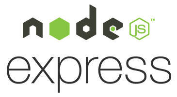

Desarrollador Web Full Stack, trabajo con distintas tecnologias
para poder implementar soluciones mediante la creación de
aplicaciones web. Mi misión es construir ambientes web de alta
calidad, velocidad, interacción y usabilidad.
Consultoría Web
Asesoría en estrategias, posicionamiento, y usabilidad para
crear proyectos web eficientes.
Desarrollo Web
Construcción de sitios y aplicaciones web escalables,
interactivas y funcionales. Programación frontend y backend.
Diseño Adaptable
Diseños que se adaptan a cualquier dispositivo; pantallas,
laptops, tablets y celulares.
Aplicaciones Rapidas
Optimización de sitios y aplicaciones web para carga rapida y
fluida.
Tecnologias y lenguajes que domino

modal title
×
modal desc.
My Home Page
Esta app permite darte una pagina principal personal con tu nombre
una to-do list y frases generadas aleatorias. Esta aplicación es
totalmente personalizable, puedes cambiar el estilo de letra,
color, fondo,etc. Tambien tiene una Api para mostrar el clima en
tu ubicación.


 
